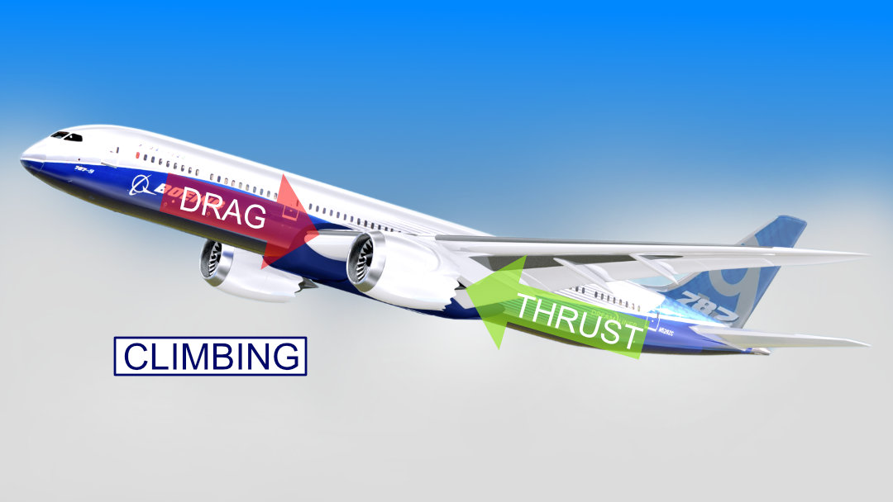

How do Airplanes fly?
Modern airplanes are truly engineering marvels. They overcome highly turbulent and unpredictable currents in the air and complete their flights by undertaking many complex maneuvers. Have you ever thought of how the pilots are able to achieve this, or what happens to the airplane when the pilot operates certain controls? In this article, we will explore how an airplane flies, and how pilots are able to control an airplane in a logical, yet simple way.